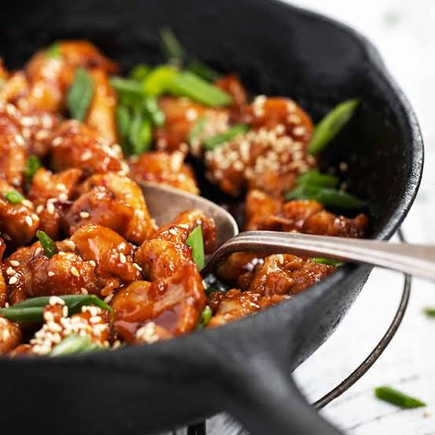

A fast, juicy chicken recipe with a spicy , smoky masala coating. It uses a single pan , minimal incredients, and works great with roti , rice or as a standalone dish.
Add chicken , curd , lemon juice , turmeric , chill powder , salt and ginger garlic paste to a bowl. Mix well and leave for 5 minutes while you prepare the pan.
Heat oil in a wide pan over the medium-high heat. Add onion and green chilli. Cook for 2-3 minutes untill the onion becomes slightly golden.
Add the marinated chicken. Increase the heat and stiry fry for 4-5 minutes until chicken changes colour and start browinng
Add corainder powder and cumin powder. Mix throughly and cook for another 2 minutes
Add 2 tbsp water , reduce to meidum heat, cover and cook for 5-7 minutes,
stirring once or twice. Chicken should reach 74°C / 165°F
Remove the lid and cook on high heat for 1-2 minutes until the excess moisture evaportates and chicken gets a slightly roasted coating. Add garam masala and fresh coriander
Quickest Tip: Cut the chicken into small , similarly sized pieces. They will cook much faster and more evenly than a large chunks